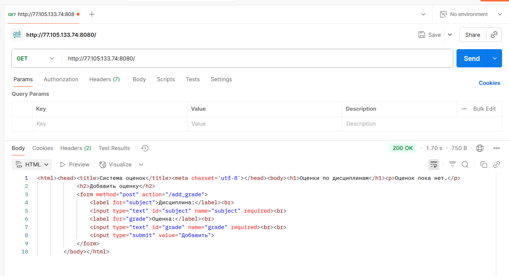
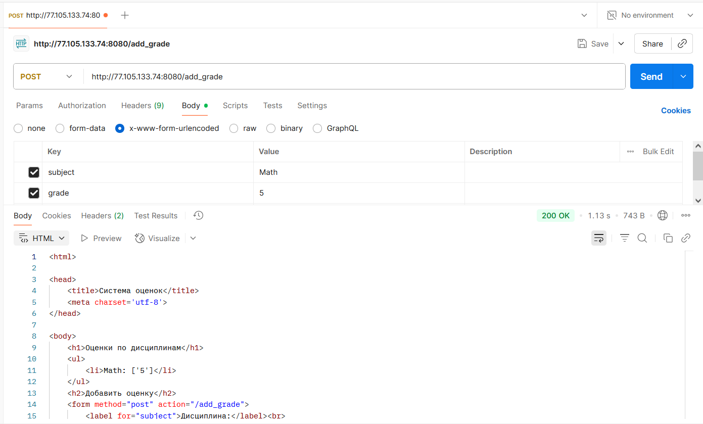

Lab1
Отчет по лабораторной работе №1
Структура лабораторной работы
-
UDP клиент-сервер
task1/server_t1.py— сервер, принимающий сообщения от клиента и отправляющий ответ.task1/client_t1.py— клиент, отправляющий сообщение серверу и получающий ответ.
-
TCP клиент-сервер с вычислениями
task2/server_t2.py— сервер, принимающий два числа, вычисляющий гипотенузу по теореме Пифагора и отправляющий результат.task2/client_t2.py— клиент, отправляющий два числа и получающий результат вычисления.task2/math_utils.py— набор математических функций.
-
HTTP сервер с отдачей HTML
task3/server_t3.py— простой HTTP сервер, отдающий статическую страницуindex.html.task3/index.html— HTML страница для теста.
-
Чат на TCP с многопоточностью
task4/server_t4.py— сервер, поддерживающий многопользовательский чат с рассылкой сообщений.task4/client_t4.py— клиент для подключения к чату.
-
Минимальный HTTP сервер с обработкой POST
task5/server_t5.pyиtask5/MyHTTPServer.py— сервер, реализующий хранение и добавление оценок по дисциплинам через веб-форму.
Задание 1
Реализован обмен сообщениями между клиентом и сервером по протоколу UDP. Клиент отправляет приветствие, сервер принимает его и отвечает.
- Клиент создает UDP-сокет, отправляет строку серверу и ждет ответ.
- Сервер принимает сообщение, выводит его и отправляет ответ клиенту.
Код:
server_t1.py:
import socket
from utils import server_address
def start_server(address):
"""Создает UDP сокет сервера на адресе address, принимает сообщение от клиента и отправляет ему приветственное сообщение"""
# Создаем UDP сокет
server_socket = socket.socket(socket.AF_INET, socket.SOCK_DGRAM)
server_socket.bind(address)
print(f'Сервер запущен на {address[0]}:{address[1]}')
while True:
# Получаем данные от клиента
client_data, client_address = server_socket.recvfrom(1024)
if client_data:
print("Получены данные: ", client_data.decode("utf-8"))
# Отправляем ответ обратно клиенту
response = 'Hello, client'
sent = server_socket.sendto(response.encode('utf-8'), client_address)
if __name__ == "__main__":
start_server(server_address)
client_t1.py:
import socket
from utils import server_address
def start_client(address: tuple):
"""Создает UDP сокет клиента и отправляет сообщение серверу с адресом address"""
# Создаем UDP сокет
client_socket = socket.socket(socket.AF_INET, socket.SOCK_DGRAM)
message = 'Hello, server'
# Отправляем сообщение серверу
sent = client_socket.sendto(message.encode('utf-8'), address)
# Ждем ответа от сервера
server_data, server = client_socket.recvfrom(1024)
# Декодируем полученные байты обратно в строку
print(f'Получен ответ: ', server_data.decode("utf-8"))
client_socket.close()
if __name__ == "__main__":
start_client(server_address)
Задание 2
Реализован TCP клиент-сервер для вычисления гипотенузы по двум сторонам треугольника. Клиент отправляет два числа, сервер вычисляет результат и возвращает его.
- Клиент подключается к серверу, отправляет два числа.
- Сервер принимает числа, вычисляет гипотенузу с помощью функции из модуля, отправляет результат.
Код:
server_t2.py:
import socket
from utils import server_address
from math_utils import *
def start_server(address: tuple):
"""Создает TCP сокет сервера на адресе address, принимает данные о катетах от клиента, считает гипотенузу
по теореме Пифагора и отправляет клиенту результат"""
# Создаем TCP сокет
server_socket = socket.socket(socket.AF_INET, socket.SOCK_STREAM)
server_socket.bind(address)
print(f'Сервер запущен на {address[0]}:{address[1]}')
server_socket.listen(1)
while True:
# Получаем данные от клиента
connection, client_address = server_socket.accept()
# Получаем данные
data = connection.recv(1024)
if data:
# Декодируем данные и разбираем их
decoded_data = data.decode('utf-8')
print(f'Получены данные: {decoded_data}')
try:
parts = decoded_data.split(',')
a = float(parts[0])
b = float(parts[1])
# Вычисляем результат
result = calculate_pythagoras(a, b)
response = str(result)
except (ValueError, IndexError):
response = 'Ошибка: неверный формат данных. Ожидается (float, float)'
# Отправляем результат клиенту
connection.sendall(response.encode('utf-8'))
# Закрываем соединение с клиентом
connection.close()
if __name__ == "__main__":
start_server(server_address)
client_t2.py:
import socket
from utils import server_address
def start_client(address: tuple):
"""Создает TCP сокет клиента и отправляет данные с катетами серверу с адресом address"""
# Создаем TCP сокет
client_socket = socket.socket(socket.AF_INET, socket.SOCK_STREAM)
client_socket.connect(address)
a_str = input('Введите первый катет (a): ')
b_str = input('Введите второй катет (b): ')
message = f'{a_str},{b_str}'
# Отправляем данные
client_socket.sendall(message.encode('utf-8'))
# Получаем ответ
data = client_socket.recv(1024)
print(f'Ответ сервера (гипотенуза): {data.decode("utf-8")}')
client_socket.close()
if __name__ == "__main__":
start_client(server_address)
math_utils.py:
# Функция для вычисления гипотенузы по теореме Пифагора
def calculate_pythagoras(a, b):
return (a ** 2 + b ** 2) ** 0.5
# Функция для решения квадратного уравнения
def calculate_quadratic_equation(a, b, c):
return b * b - 4 * a * c
# Функция для вычисления площади трапеции
def calculate_trapezoid_area(a, b, h):
return (a + b) * h / 2
# Функция для вычисления площади параллелограмма
def calculate_parallelogram_area(a, h):
return a * h
Задание 3
Реализован HTTP сервер, отдающий статическую HTML страницу для теста.
- Сервер принимает HTTP-запросы и возвращает содержимое файла
index.html. - Страница содержит простой HTML для проверки работы.
Код:
server_t3.py:
import socket
from utils import server_address
def start_server(address):
"""Создает веб-сервер на адресе address, который при подключении клиента, отправляет ему HTTP-сообщение,
содержащие HTML-страницу index.html"""
# Создаем сокет
sock = socket.socket(socket.AF_INET, socket.SOCK_STREAM)
sock.setsockopt(socket.SOL_SOCKET, socket.SO_REUSEADDR, 1)
sock.bind(address)
sock.listen(1)
print(f'Сервер запущен на http://{address[0]}:{address[1]}')
while True:
connection, client_address = sock.accept()
try:
# Принимаем запрос от браузера
request = connection.recv(1024)
print(f"Получен запрос:\n{request.decode('utf-8')}")
# Читаем содержимое файла
with open('index.html', 'r', encoding='utf-8') as f:
html_content = f.read()
# Формируем HTTP-ответ
response = (
'HTTP/1.1 200 OK\r\n'
'Content-Type: text/html; charset=utf-8\r\n'
f'Content-Length: {len(html_content.encode("utf-8"))}\r\n'
'\r\n'
f'{html_content}'
)
connection.sendall(response.encode('utf-8'))
finally:
connection.close()
if __name__ == "__main__":
start_server(server_address)
index.html:
<!DOCTYPE html>
<html lang="ru">
<head>
<meta charset="UTF-8">
<title>Тестовая страница</title>
</head>
<body>
<h1>Привет от моего Python-сервера!</h1>
<p>Эта страница была загружена с помощью сокетов.</p>
</body>
</html>
Задание 4
Реализован многопоточный чат на TCP, поддерживающий несколько клиентов.
- Сервер принимает подключения, создает поток для каждого клиента и рассылает сообщения всем участникам.
- Клиент подключается к серверу, отправляет и получает сообщения.
Код:
server_t4.py:
import socket
import threading
from utils import server_address
clients = [] # Список для хранения сокетов всех клиентов
def broadcast(message, sender_connection):
"""Функция для рассылки сообщений всем клиентам, кроме отправителя"""
for client_conn in clients:
try:
if sender_connection is not client_conn:
client_conn.send(message)
except:
# Если отправка не удалась, клиент отключился
clients.remove(client_conn)
client_conn.close()
def handle_client(connection, address):
"""Функция для обработки сообщений от клиента"""
print(f'[НОВОЕ ПОДКЛЮЧЕНИЕ] {address} подключился.')
while True:
try:
# Получаем сообщение
message = connection.recv(1024)
if message:
print(f'[{address}] {message.decode("utf-8")}')
# Рассылаем его всем остальным
broadcast(message, connection)
else:
# Если сообщение пустое, клиент отключился
print(f'[{address}] отключился.')
clients.remove(connection)
connection.close()
break
except:
print(f'[{address}] соединение разорвано.')
clients.remove(connection)
connection.close()
break
# Основная часть сервера
def start_server():
"""Функция для создания TCP сокета сервера, к которому происходит подключение,
и запуска обработки новых клиентов в отдельных потоках"""
# Создаем TCP сокет
server_socket = socket.socket(socket.AF_INET, socket.SOCK_STREAM)
server_socket.bind(server_address)
print(f'Сервер запущен на {server_address[0]}:{server_address[1]}')
server_socket.listen(1)
while True:
# Принимаем новое подключение
connection, address = server_socket.accept()
# Добавляем нового клиента в список
clients.append(connection)
# Создаем и запускаем для него новый поток
thread = threading.Thread(target=handle_client, args=(connection, address))
thread.start()
print(f'[АКТИВНЫЕ ПОДКЛЮЧЕНИЯ] {threading.active_count() - 1}')
if __name__ == "__main__":
start_server()
client_t4.py:
import socket
import threading
from utils import server_address
def receive_messages(client_socket):
"""Функция для получения сообщений от сервера"""
while True:
try:
message = client_socket.recv(1024).decode('utf-8')
if message:
print(message)
else:
break
except:
print("Соединение с сервером разорвано.")
client_socket.close()
break
def send_messages(client_socket, nickname):
"""Функция для отправки сообщений серверу"""
while True:
message_text = input()
message = f'{nickname}: {message_text}'
client_socket.send(message.encode('utf-8'))
def start_client():
"""Функция для создания TCP сокета клиента, отправки сообщений серверу
и обработки ответов"""
nickname = input("Введите ваш ник: ")
# Создаем TCP сокет
client_socket = socket.socket(socket.AF_INET, socket.SOCK_STREAM)
client_socket.connect(server_address)
# Запускаем поток для получения сообщений
receive_thread = threading.Thread(target=receive_messages, args=(client_socket,))
receive_thread.start()
# Запускаем отправку сообщений в основном потоке
send_messages(client_socket, nickname)
if __name__ == "__main__":
start_client()
Задание 5
Реализован минимальный HTTP сервер с поддержкой POST-запросов для хранения оценок по дисциплинам.
- Сервер принимает POST-запросы с оценками, сохраняет их и отображает список.
- Используется собственный класс сервера.
Запрос с Postman
GET-запрос

POST-запрос

Код:
server_t5.py:
from MyHTTPServer import MyHTTPServer
if __name__ == '__main__':
host = 'localhost'
port = 8080
serv = MyHTTPServer(host, port)
try:
serv.serve_forever()
except KeyboardInterrupt:
pass
MyHTTPServer.py:
import socket
from urllib.parse import parse_qs
class MyHTTPServer:
"""Класс для создания веб-сервера для обработки GET и POST HTTP-запросов"""
def __init__(self, host='localhost', port=8080):
self.host = host
self.port = port
self.grades = {} # Хранилище для оценок: {'Дисциплина': [Оценка1, Оценка2]}
def serve_forever(self):
"""1. Запуск сервера на сокете, обработка входящих соединений"""
server_socket = socket.socket(socket.AF_INET, socket.SOCK_STREAM)
server_socket.setsockopt(socket.SOL_SOCKET, socket.SO_REUSEADDR, 1)
try:
server_socket.bind((self.host, self.port))
server_socket.listen(1)
print(f'Сервер запущен на http://{self.host}:{self.port}')
while True:
connection, client_address = server_socket.accept()
print(f"Подключен клиент: {client_address}")
try:
self.serve_client(connection)
except Exception as e:
print(f"Ошибка при обработке клиента: {e}")
finally:
connection.close()
finally:
server_socket.close()
def serve_client(self, connection):
"""2. Обработка клиентского подключения"""
# Используем makefile для удобного чтения данных из сокета
rfile = connection.makefile('rb')
# Парсим первую строку запроса (метод, URL, версия)
method, path, version = self.parse_request(rfile)
# Парсим заголовки
headers = self.parse_headers(rfile)
# Читаем тело запроса, если оно есть (для POST)
body = b''
if 'Content-Length' in headers:
try:
content_length = int(headers['Content-Length'])
body = rfile.read(content_length)
except (ValueError, TypeError):
print("Неверное значение Content-Length")
# Обрабатываем запрос и получаем компоненты ответа
response_code, response_reason, response_headers, response_body = self.handle_request(method, path, body)
# Отправляем ответ клиенту
self.send_response(connection, response_code, response_reason, response_headers, response_body)
def parse_request(self, rfile):
"""3. функция для обработки заголовка http+запроса.
Python, сокет предоставляет возможность создать вокруг него некоторую обертку,
которая предоставляет file object интерфейс. Это дайте возможность построчно обработать запрос.
Заголовок всегда - первая строка.
Первую строку нужно разбить на 3 элемента (метод + url + версия протокола).
URL необходимо разбить на адрес и параметры (isu.ifmo.ru/pls/apex/f?p=2143,
где isu.ifmo.ru/pls/apex/f, а p=2143 - параметр p со значением 2143)"""
raw = rfile.readline()
request_line = str(raw, 'iso-8859-1').rstrip('\r\n')
words = request_line.split()
if len(words) != 3:
raise Exception('Неверный формат строки запроса')
method, target, version = words
return method, target, version
def parse_headers(self, rfile):
"""4. Функция для обработки headers.
Необходимо прочитать все заголовки после первой строки до появления пустой строки
и сохранить их в массив."""
headers = {}
while True:
line = rfile.readline(65537)
if line in (b'\r\n', b'\n', b''):
break
line_str = str(line, 'iso-8859-1').rstrip('\r\n')
key, value = line_str.split(':', 1)
headers[key.strip()] = value.strip()
return headers
def handle_request(self, method, path, body):
"""5. Функция для обработки url в соответствии с нужным методом.
В случае данной работы, нужно будет создать набор условий,
который обрабатывает GET или POST запрос. GET запрос должен возвращать данные.
POST запрос должен записывать данные на основе переданных параметров."""
if method == 'GET' and path == '/':
html_content = self._generate_html_page()
body_bytes = html_content.encode('utf-8')
headers = {
'Content-Type': 'text/html; charset=utf-8',
'Content-Length': str(len(body_bytes))
}
return 200, 'OK', headers, body_bytes
elif method == 'POST' and path == '/add_grade':
data_str = body.decode('utf-8')
parsed_data = parse_qs(data_str)
subject = parsed_data.get('subject', [''])[0]
grade = parsed_data.get('grade', [''])[0]
if subject and grade:
self.grades[subject] = self.grades.get(subject, []) + [grade]
print(f"Обновлены оценки: {self.grades}")
# Делаем редирект на главную страницу
headers = {'Location': '/'}
return 303, 'See Other', headers, b''
else:
body_bytes = b"404 Not Found"
headers = {
'Content-Type': 'text/plain',
'Content-Length': str(len(body_bytes))
}
return 404, 'Not Found', headers, body_bytes
def send_response(self, connection, code, reason, headers, body):
"""6. Функция для отправки ответа. Необходимо записать в соединение
status line вида HTTP/1.1 <status_code> <reason>.
Затем, построчно записать заголовки и пустую строку, обозначающую конец секции заголовков."""
# Формируем статус-строку
status_line = f"HTTP/1.1 {code} {reason}\r\n"
connection.sendall(status_line.encode('iso-8859-1'))
# Отправляем заголовки
for key, value in headers.items():
header_line = f"{key}: {value}\r\n"
connection.sendall(header_line.encode('iso-8859-1'))
# Пустая строка после заголовков
connection.sendall(b'\r\n')
# Отправляем тело ответа, если оно есть
if body:
connection.sendall(body)
def _generate_html_page(self):
"""Вспомогательная функция для генерации HTML-страницы."""
body = "<h1>Оценки по дисциплинам</h1>"
if self.grades:
body += "<ul>"
for subject, grade in self.grades.items():
body += f"<li>{subject}: {grade}</li>"
body += "</ul>"
else:
body += "<p>Оценок пока нет.</p>"
body += """
<h2>Добавить оценку</h2>
<form method="post" action="/add_grade">
<label for="subject">Дисциплина:</label><br>
<input type="text" id="subject" name="subject" required><br>
<label for="grade">Оценка:</label><br>
<input type="text" id="grade" name="grade" required><br><br>
<input type="submit" value="Добавить">
</form>
"""
return f"<html><head><title>Система оценок</title><meta charset='utf-8'></head><body>{body}</body></html>"
Выводы
- В ходе лабораторной работы были реализованы различные типы сетевых взаимодействий: UDP, TCP, HTTP.
- Получен опыт работы с сокетами, многопоточностью, обработкой HTTP-запросов и форм.
- Все задания структурированы по папкам, код снабжен комментариями и легко расширяем.